The demo app gains an RBQM tab. It scores a study’s sites with gsm’s own site metrics, worked out by R in your browser and drawn with gsm.viz’s own charts, on the study the other tabs are already drawing. The tab is Experimental. The histogram loses two deprecated settings, and no other chart changes.
3 of 8 metrics on the study the app opens with, at 17 sites8 of 8 on gsm’s raw files, at 150 sitesstarting R: about 55.2 MB, oncesafety.viz dev at 0308b53
What to look at
Open the demo app and click the RBQM tab. Nothing else is chosen or loaded. The tab says it will run on the loaded study’s two files, and that they support 3 of 8 metrics.
Press Start R. The tab says what R is doing while it starts, then draws a site overview of 17 sites, with a scatter plot and a bar chart for the metric you choose.
Choose a metric that did not run. In place of its charts it says which file it needs.
On the Data tab choose the RBQM study, then go back to the RBQM tab. R is already running, so all eight metrics draw in a few seconds, at 150 sites.
Where it stands
This is the review page for a release candidate. Nothing here is released until the owner approves it (the release candidate).
Every picture was taken on 2026-10-08 from the dev site, which is built from the commit above, with real R running in the browser.
A script beside this page holds 23 things the page says to the live page that shows them, and all 23 held (the numbers it read).
The data is public or synthetic: the app’s pilot study is the public CDISC pilot study, and the RBQM study is gsm’s synthetic demo study.
01 · the RBQM tab, on the loaded study
The RBQM tab, on the study you already loaded
The tab reads the loaded study’s subject-level and adverse events files, the same two the safety charts read, through the column mapping on the Data tab. There is no second study to load. On the pilot study those two files support three of gsm’s eight site metrics: adverse event rate, serious adverse event rate and study discontinuation rate.
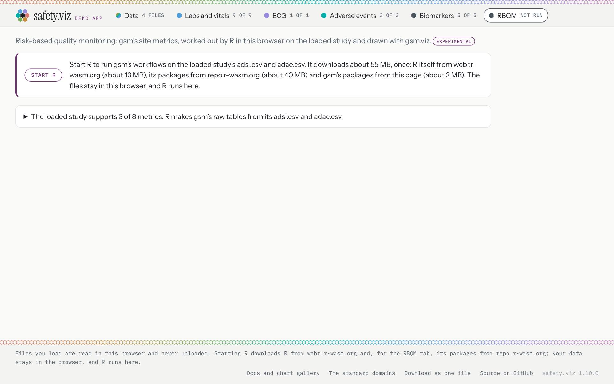
Before the press. The tab says what it will run on, what starting R downloads and from where, and that the files stay in the browser. Nothing has been asked of R’s addresses yet.
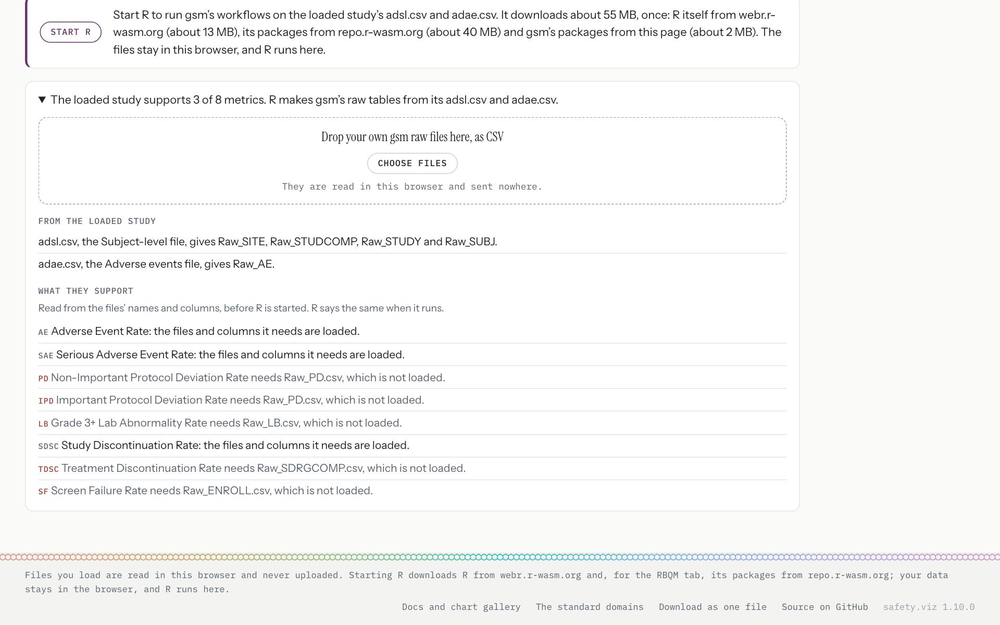
Opened, the line lists what each file of the study gives gsm and which metrics that supports. It is worked out from the files’ columns before R starts, and R says the same when it runs.
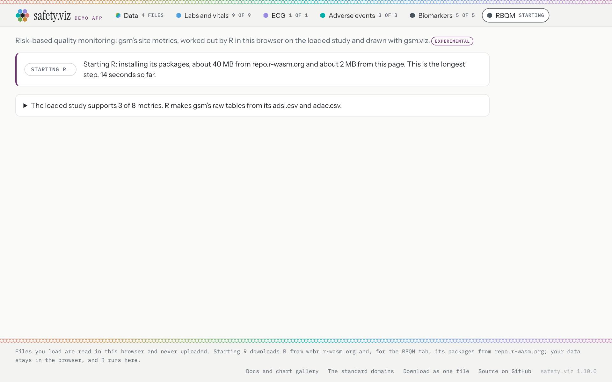
While R starts, the tab says which step it is on and counts the seconds.
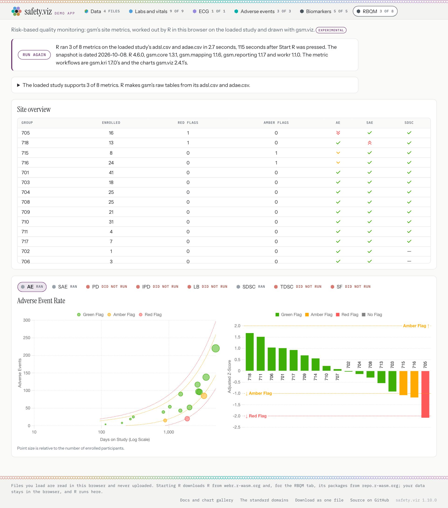
After the press: “R ran 3 of 8 metrics on the loaded study’s adsl.csv and adae.csv in 2.7 seconds, 115 seconds after Start R was pressed.” The overview has a row for each of the 17 sites, and site 705 leads it with a red flag for adverse events. Each tick, arrow and number is the row R returned.
What you should see
The RBQM tab reads “not run”, then “3 of 8”.
17 sites in the overview, with columns AE, SAE and SDSC.
The first row is site 705: 16 enrolled, 1 red flag.
A scatter plot and a bar chart under the metric buttons.
The line of versions ends: “The metric workflows are gsm.kri 1.7.0’s and the charts gsm.viz 2.4.1’s.”
Wait a minute or two the first time. The sentence says what R is doing.
Click a cell in the SDSC column: the charts beneath switch to study discontinuation.
Hover a cell to read its score, rate, numerator and denominator.
A metric that could not run says why
Five metrics need records the pilot study does not have: protocol deviations, lab toxicity grades, treatment completion and screening. Each stays in the row of metrics, marked “did not run”, and says which file it needs.
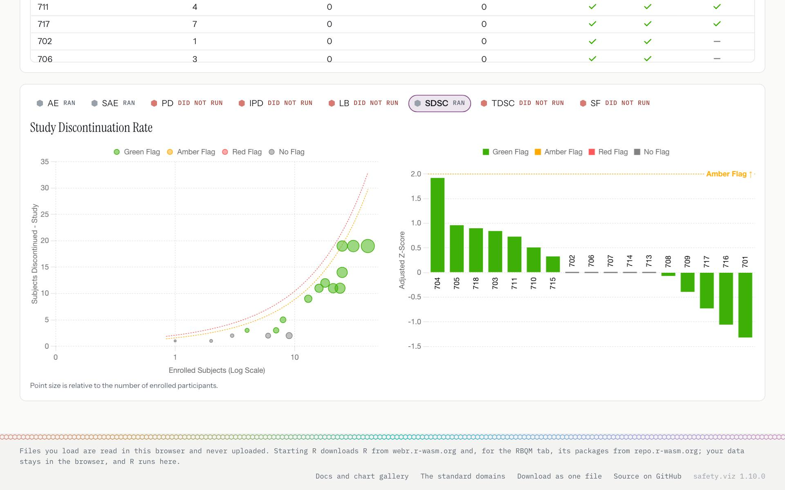
Study discontinuation rate, the third metric the pilot study supports.
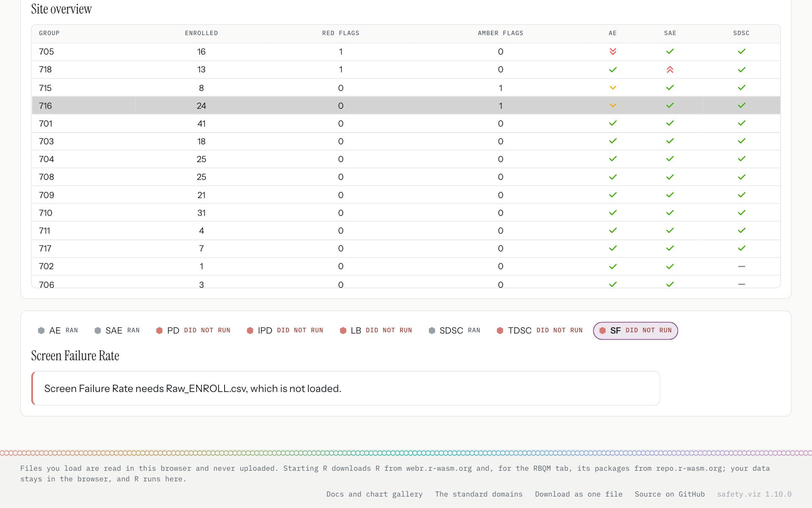
“Screen Failure Rate needs Raw_ENROLL.csv, which is not loaded.” The sentence is R’s own.
It follows the mapping on the Data tab
R is handed only the columns the metrics need, under the app’s standard names, read through your mapping. So a study with its own column names works once its site, end-of-study day and end-of-study status are mapped. Clear a row of the mapping and R runs the study again at once, and names the column.
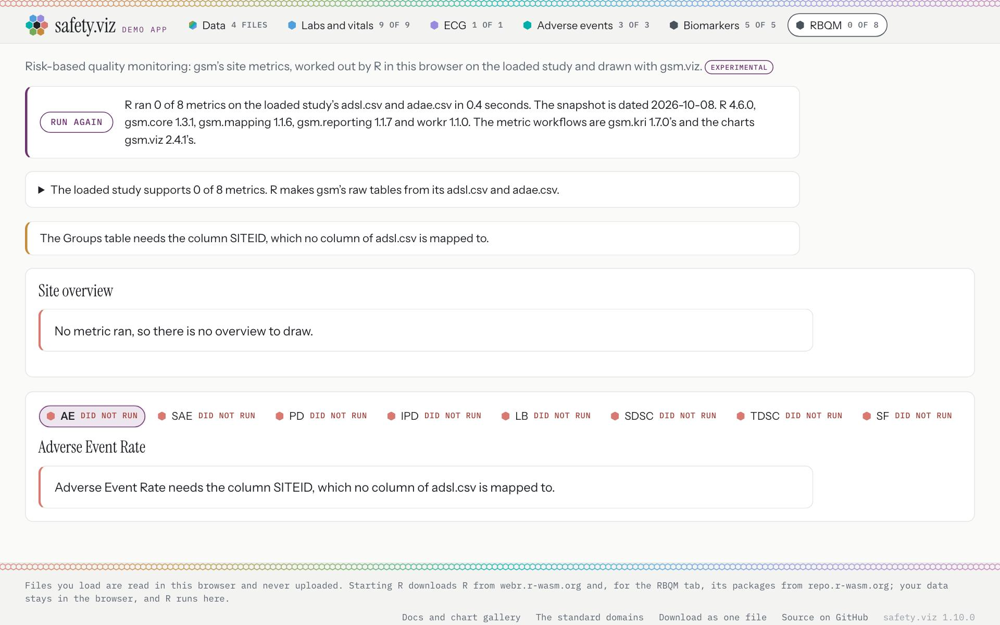
With the site’s row cleared: “Adverse Event Rate needs the column SITEID, which no column of adsl.csv is mapped to.” The file may hold the column under another name, so the tab says it is not mapped, not that it is missing.
On a phone
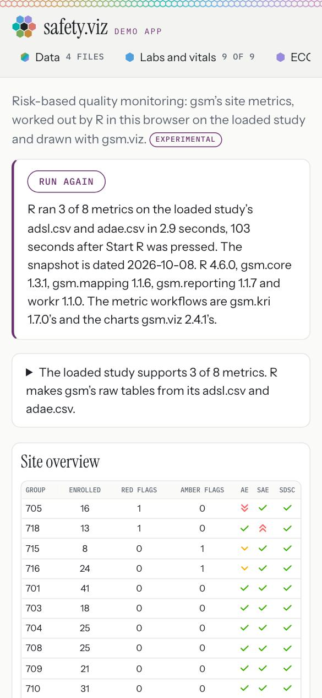
The overview at 390 pixels wide. Nothing scrolls sideways.
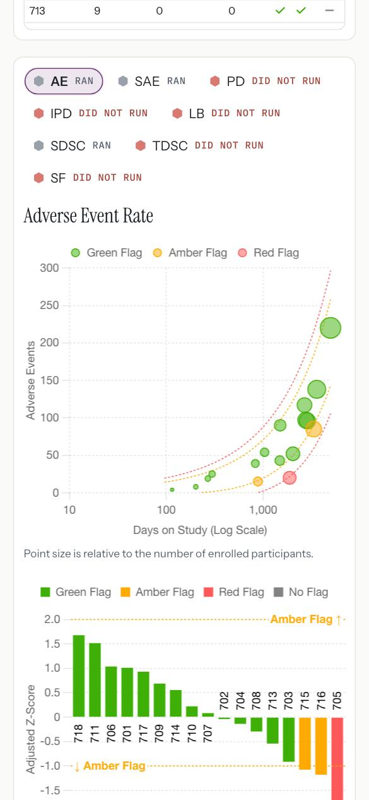
The metric buttons and a chart, stacked.
02 · all eight metrics
All eight metrics, on gsm’s raw files
A study that has gsm’s raw files runs every metric. The demo app carries one as a fourth demo study, and the tab takes your own files too. A raw file that is loaded is used as it is; the study’s own files fill in only for a table that is not loaded.
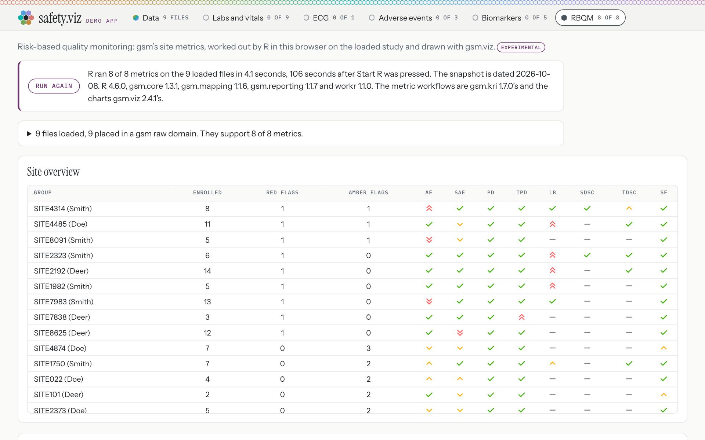
The RBQM study: gsm’s nine raw files for 765 enrolled participants at 150 sites. “R ran 8 of 8 metrics on the 9 loaded files in 4.1 seconds, 106 seconds after Start R was pressed.” Here a site is labelled with its investigator’s name, because these files have one.
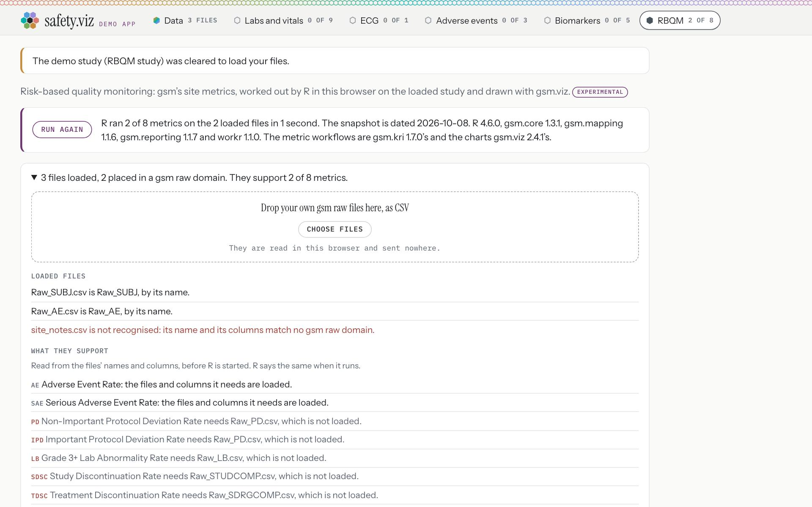
Three files chosen from disk: “3 files loaded, 2 placed in a gsm raw domain. They support 2 of 8 metrics.” A file the tab does not recognise is named and stays out of R.
Click the RBQM tab and press Start R, if R is not running yet.
To try files of your own, open the line under the sentence and drop gsm raw files there, as CSV. Their column names must be gsm’s.
03 · what R does
What R does, and what stays in the browser
R computes every number the tab shows. The app’s JavaScript decides when R is asked, hands R’s tables to gsm.viz and writes the sentences. It computes no rate, score or flag.
Whose code runs
What
From
How it gets here
R itself
webR, R 4.6.0
Downloaded from webr.r-wasm.org when you press Start R
The functions that work out each metric
gsm.core 1.3.1
Built for R in the browser from its release tag, served beside the app
The mapping and reporting workflows, and the engine that runs them
Built from their release tags, served beside the app
The eight metric workflows
gsm.kri 1.7.0
Its workflow files and one R file are copied from its release tag. The package itself is not installed
The charts
gsm.viz 2.4.1
Its built bundle, copied from its release tag
R’s other packages
The public index for R in the browser
Downloaded from repo.r-wasm.org
gsm.kri is not in the tab’s list of R’s versions because R cannot report a package it has not installed. The tab now names it in the sentence after that list.
The steps gsm.kri’s workflows name (input, transform, analyze, flag, summarize) are gsm.core’s functions. Installing gsm.kri would also bring the packages it uses for tables and reports, which the tab does not need.
Every copy is held to its release tag by a check that runs on every change.
How the loaded study becomes gsm’s tables
Five small workflows, in the same format as gsm’s own and run by the same engine in R, make gsm’s raw tables from the app’s standard columns. These are choices, and each can change:
Days on study is the study’s end day.
A participant completed the study when the end-of-study status is COMPLETED, and left it when it is DISCONTINUED.
Everyone in the subject-level file counts as enrolled.
An adverse events row with no term is a participant with no event, and is left out, as the app’s charts leave it out.
The pilot study names no investigators, so a site is labelled with its number.
The pilot study’s subject-level file gained one column for this, the site. Every other column of it is unchanged.
What it downloads, and what leaves
On this capture, starting R downloaded 55.2 MB: 13.0 MB of R from webr.r-wasm.org, 40.0 MB of packages from repo.r-wasm.org, and 2.2 MB of gsm’s packages from the page’s own address. The tab says about 55 MB.
The first result came 115 seconds after the press on this capture, over a home connection. On the test runner, which has a faster one, it takes 30 to 50 seconds. A later run takes a few seconds, because R is already up.
Before the press, nothing is asked of R’s addresses.
Your files are never sent. A test watches every request the tab makes on the pilot study and holds each to a read with no body, to three addresses: the page’s own, webr.r-wasm.org and repo.r-wasm.org. No address carries a participant’s ID.
The single-file build of the app cannot start R, and its RBQM tab says so.
How the numbers are checked
R in the browser is held to R on a desktop: all 1,186 site rows of the eight metrics on the RBQM study, and the 51 rows of three metrics on the pilot study, agree to eight decimal places.
Every number in the overview table is read back against the row R returned.
On the pilot study, R’s totals are counted another way from the files: 1,122 adverse events, 3 of them serious, and 144 of 254 participants who left the study early.
Under every chart in the demo app, a footnote links the chart’s clinical guide, where it has one, and its test evidence. The links open in a new tab, so a study you loaded stays loaded.
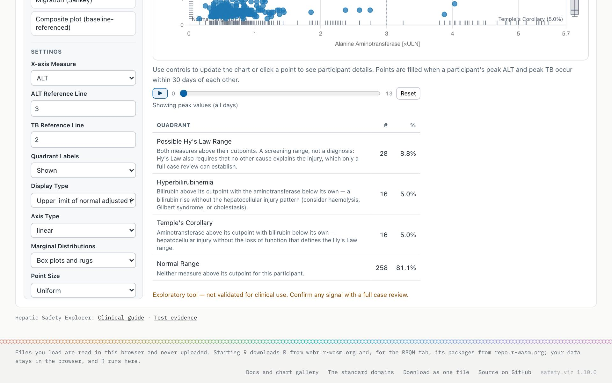
“Hepatic Safety Explorer: Clinical guide · Test evidence” Six charts have a clinical guide; every chart has test evidence.
The histogram’s two p-value settings are removed
The v1.9.1 release notes said v1.10.0 would remove test_normality and compare_distributions, and it does. Each put a p-value on the chart that safety.viz worked out in JavaScript with a shortcut. safety.viz now computes no statistical test in JavaScript; a test belongs in R.
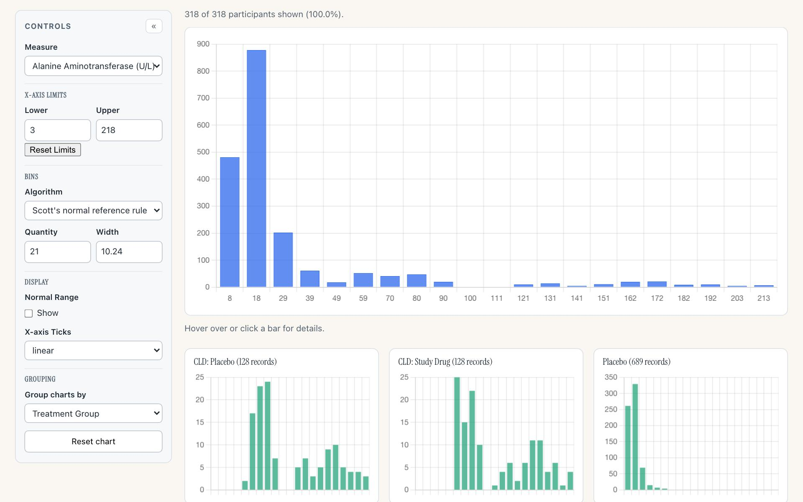
The histogram given both removed settings. It draws as it would without them: no p-value on the main chart or on a panel.
What changes for you
Take both settings out of your histogram settings. Nothing in safety.viz replaces them.
A chart still given one draws as before, without the p-value.
The console says so once for each: “safety.viz histogram: `test_normality` was removed in v1.10.0 and is ignored. safety.viz computes no statistical test in JavaScript: run the test in R.”
A chart that never set them is unchanged.
Checked on the live page
The script gave the histogram on the dev site both settings, grouped by treatment group.
It drew 5 panels and no p-value.
The console said each setting was removed, once.
before you approve
What is not in this release
The query, data entry and data change metrics, and the three newer site metrics.
Country-level metrics, the time series chart and the report.
Mapping the column names of raw files that differ from gsm’s.
R in the single file: it loads nothing, so its RBQM tab says it needs R.
Investigator names on the pilot study’s sites: the study has none.